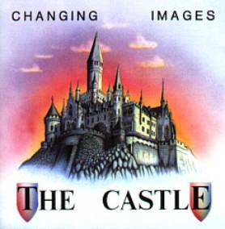
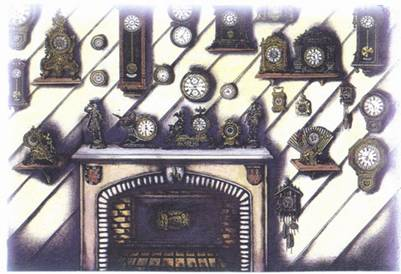
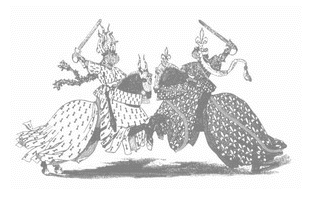
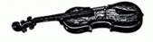
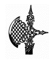
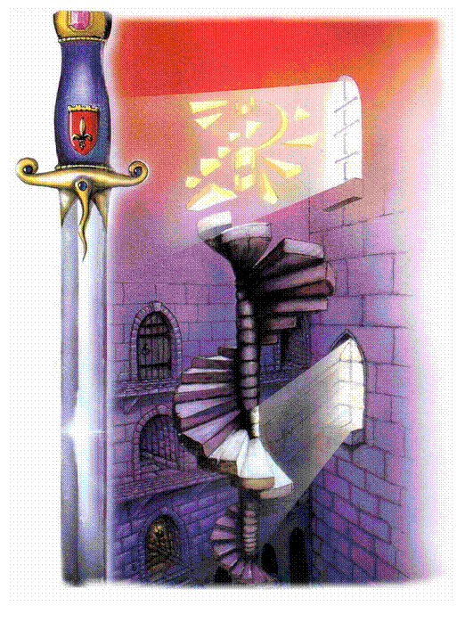

THE CASTLE (CD 1991)
|
 2. THE ALLEY 5´02 3. ENTRANCE HALL 6´05 4. BALLROOM 3´38 5. HALL OF CLOCKS 4´56 6. THE CRYPT 4´05 7. ANCIENT GALLERY 5´51 8. THE TOWER 5´30 9. DUNGEONS 5´00 10. THE GARDEN 5´40 11. THE KNIGHTS 5´16  |
 The Castle, 1991 CD MUSEA 4044.AR Vertrieb: CUE-
Records ( „Alte
Schlösser und Burgen haben immer schon eine faszinierende Wirkung auf mich
gehabt. Besichtigt man manche Schlösser etwa in England, Frankreich (z.B. an
der Loire: Azay-le-rideau, Chambord, Chenonceau ) oder Deutschland, bekommt
man irgendwie das Gefühl einer Zeitreise ins Mittelalter. Ich stelle mir dann
automatisch vor, was sich wohl in den Räumen vor langer Zeit abgespielt haben
mag; wie die Bewohner damals gelebt haben, welche Geschichten oder Tragödien
mit einzelnen Gegenständen oder Räumen verbunden sind, die längst zur Legende
geworden sind oder von denen heute niemand mehr etwas weiß. Oft kann man ein
merkwürdiges Gefühl, eine Atmosphäre ausmachen, die ein Raum mit seiner
Einrichtung ausstrahlt und seit Jahrhunderten gleichsam `gespeichert' hat.
Das war die Grundlage
unseres Konzeptalbums - die Imagination von Atmosphären. Klar, dass dabei am
Anfang vieler Titel Geräuscheffekte eine Rolle spielen, woraus sich eine
Musik entwickelt, die sich schließlich verselbstständigt. Bewusst wurden
Klassik- ähnliche Strukturen der Arrangements und Elemente akustischer
Instrumente eingesetzt, da sie nach unserer Auffassung stilistisch zum
Gesamtkonzept passen. Die so entstandene Instrumentalmusik läßt sich
vielleicht - wenn auch umständlich - beschreiben als Symbiose aus
symphonic-rock, electronic- und minimal music mit Klassik- und Ambient
Elementen. Uns ist bewusst, daß wir damit so ziemlich zwischen allen Stühlen
abseits des `mainstream' sitzen - oder besser: AUF allen Stühlen? Schließlich
war `The Castle' ein in sich abgeschlossenes Konzeptprojekt, mit einem
irgendwo ganzheitlichen Aspekt."
 Martin: BASS: EFFEKTE: COMPUTER/MIDI: RECORDING:  HighCom, BEHRINGER 8-channelStudio DenoiserMK II, BEHRINGER Studio Exciter F, KORG KME-56 EqualizerVolker: GITARREN: SYNTHESIZER: EFFEKTE:  Wahwah and Fuzz; The Rat; Big Muff. |